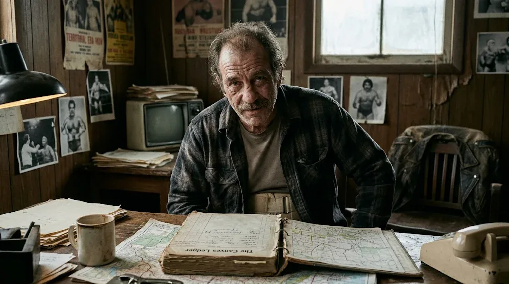
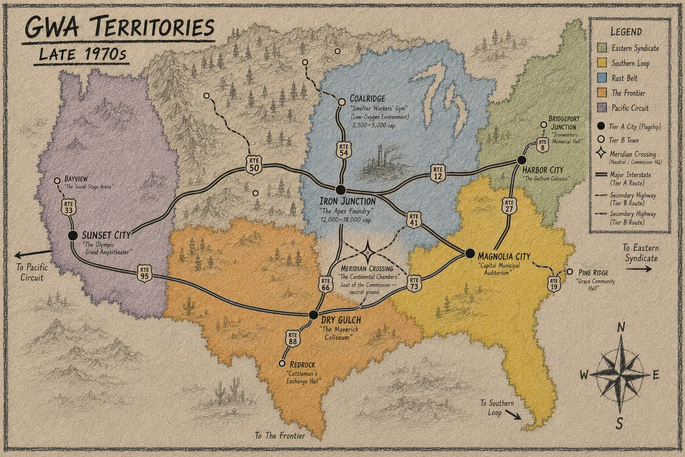
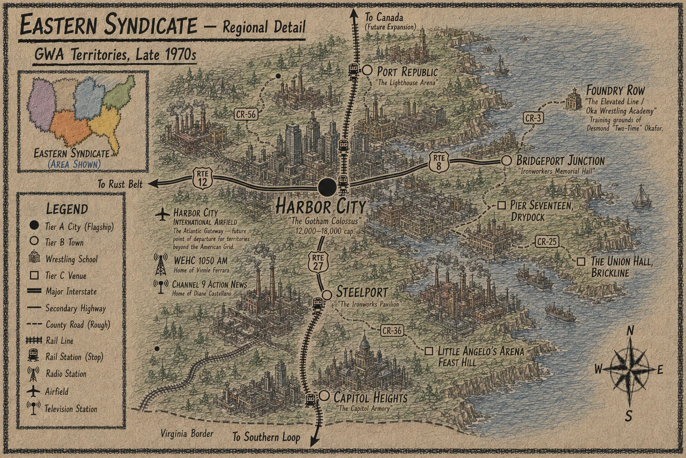
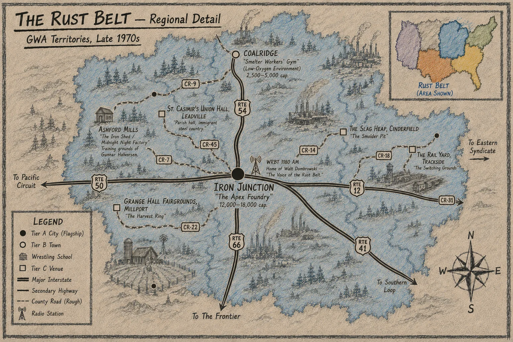
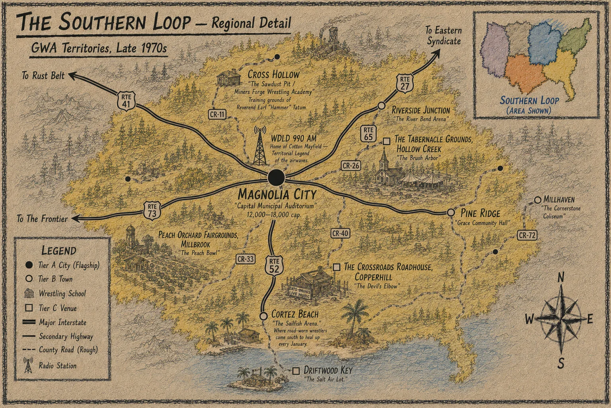
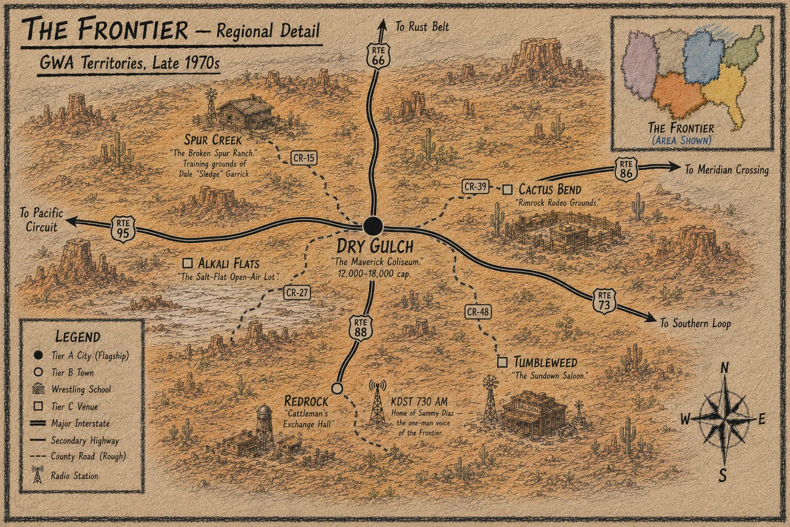
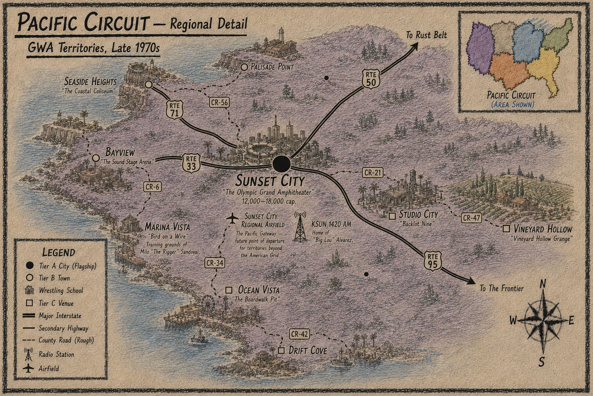

Tabletop RPG · Territorial wrestling · In development
A tabletop roleplaying game of the late-1970s territory era — promoters, faces and heels working regional circuits from Harbor City to Sunset City. Built on the Crescent City Engine, the same engine behind Hard Times in the Big Easy.
Rulebook Vol. 1 · Introduction
Rocco “Ironman” Salvatore

People always want to know where professional wrestling started, and I never know what answer they expect, because there was no morning when somebody unlocked a building, put up a sign that said PROFESSIONAL WRESTLING, and decided this was how the business was going to work from then on. It came together over a long time, in a lot of towns, with a lot of men who disagreed about nearly everything except that there was money to be made if you could get enough people interested in watching two fellows wrestle.
When I was coming up, you still met old-timers who had worked carnivals, fairs, athletic clubs and whatever hall a promoter could get for the night. Some of them were legitimate catch wrestlers who could tie you in knots before you understood what had happened. Some were shooters, some were hookers, and some were just tough sons of bitches who had learned enough wrestling to keep themselves from getting embarrassed in public. The business was not as cleanly divided between a work and a shoot as people like to imagine afterward. There were nights when everybody knew the finish, nights when nobody knew it, and nights when two men went into the ring thinking they had an understanding and discovered somewhere around the third minute that they did not.
What changed everything was not that wrestling suddenly became worked. Wrestling had been worked in one form or another for a long time. What changed was that promoters learned there was more money in giving people a reason to care about the next match than there was in simply giving them a match tonight.
You could put two fine wrestlers together and draw a crowd once. If one of them cheated the other, embarrassed him, stole something from him or left the people convinced that justice had not been done, you had a chance of drawing that same crowd again. Once people started arguing about what ought to happen next Saturday before they had even left the building this Saturday, you had something better than a wrestling match. You had a business that could keep moving.
That is where Kayfabe comes into it, and I want to straighten something out because people who were never around the business have always had a bad habit of explaining Kayfabe to people who were. Kayfabe was never as simple as convincing every person in the building that everything they saw was a legitimate contest. Plenty of people knew damn well they were watching professional wrestling. What mattered was that everybody involved treated the thing seriously enough that the people buying tickets were allowed to care about it without being made fools for caring.
If the champion carried himself like the championship mattered, The Office treated the championship like it mattered, the other boys wanted it like it mattered, and the promoter protected it like it mattered, then sooner or later the people in the seats treated it the same way. That is how a piece of leather and metal becomes The Strap. You cannot manufacture that by telling people it is important. You build it slowly, and you can destroy it a hell of a lot faster than you built it.
The territory system grew for the same reason most businesses used to be local. The country is enormous, travel is expensive, television does not reach everywhere, and a fellow in one town has no particular reason to care about a wrestler from five states away unless somebody gives him one.
A promoter learned his towns. He knew which buildings drew, which buildings looked bigger on television than they really were, which sheriff wanted free tickets for half his family, which newspaper man could be trusted, which radio fellow would put you over, and which local politician suddenly remembered he hated wrestling every time an election came around. He knew where people got paid on Friday and where the mill changed shifts at four-thirty. He knew whether a babyface ought to shake hands all the way to the ring or whether the crowd in that particular town would think he looked like a fool for doing it.
That was a territory. It was not just a line somebody drew on a map. It was a relationship between a promotion and a population.
The boys traveled because the people did not. You could work a man hard in one part of the country, get everything you could out of him, and then send him somewhere else where nobody had seen him before. He could arrive with a clean slate, a new opponent and, if he had any sense, a different shirt.
Sometimes a man left because his program was finished. Sometimes he left because The Office had nothing else for him. Sometimes he left because he had gotten himself so hot that somebody thought he could draw better money somewhere else. Sometimes he left because three people in the dressing room wanted to kill him and the promoter decided geography was cheaper than diplomacy.
That movement is what made the territories depend on one another whether the promoters admitted it or not. Talent crossed boundaries. Champions crossed boundaries. Money crossed boundaries. One territory needed fresh heels, another needed a babyface, somebody else had a tag team that had run out of people to fight. Arrangements got made over telephones, in restaurants, in hotel rooms, at gas stations and plenty of places where nobody thought to bring a contract.
For a long time, a handshake and a man’s reputation were enough to hold most of it together. Then the business got bigger, television got better, more money started moving, and there were enough championships and enough competing interests that memory stopped being good enough.
That is where the Association came from. Now here’s a thing that trips people up who weren’t around for it. When the Association actually came together and started running things like one operation instead of five separate outfits doing each other favors, somebody in an office somewhere decided the training schools all needed cleaner names. Made sense from where they were sitting — you can’t run a continental operation with every school still going by whatever a founder scrawled on a barn door forty years earlier. So the paperwork changed. The names on the letterhead changed.
But you try telling an old-timer who trained at a place his whole life that it’s got a different name now. Half of them never stopped calling it what they always called it…
It was not just a line somebody drew on a map.
It was a relationship between a promotion and a population.
The territories
Each territory runs from a flagship city, with towns, county-road venues, wrestling schools and the radio voices that sell the cards. Meridian Crossing, seat of the Commission, sits on neutral ground where they meet.

Regional detail





Follow development
The G.W.A. is in development. Design notes go out on the Substack; playtesters and collaborators are welcome to get in touch.